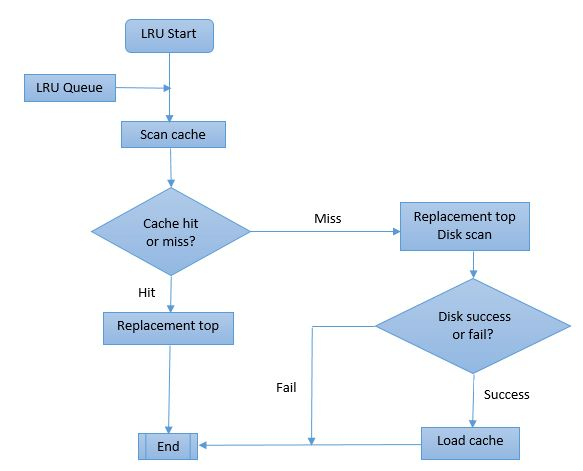
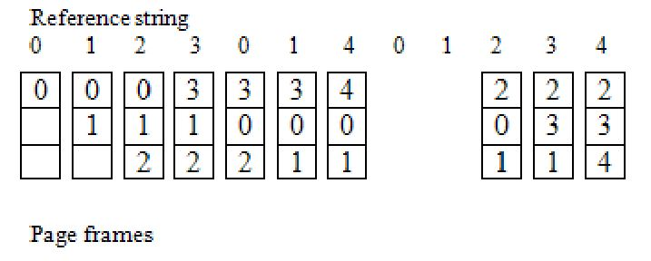

The LRU algorithm keeps track of the order in which pages are accessed and maintains a list of pages in memory, ordered from most recently accessed to least recently accessed.
When a new page needs to be loaded into memory, and there is no free space, the algorithm scans the list from the beginning and replaces the page that was accessed least recently.
In other words, any page that has been inactive for an extended period of time is more likely to remain inactive. As a result, it is preferable to replace that page.
The LRU algorithm works on the principle of locality of reference, which states that programs tend to access a small portion of memory at any given time.

Flow Chart of LRU

Example of LRU
Advantages & Disadvantages :
In this algorithm, only those pages are replaced that are not be utilized for the longest time frame.
It includes future knowledge, because of this capability optimal page replacement algorithm consists following advantages
1. Most reduced page fault rate
2. Never suffers from Belady’s anomaly
3. Twice tantamount to FIFO Page Replacement Algorithm
The optimal page replacement algorithm consists some of disadvantages are as follows
1. It is hard to execute
2. It needs to estimate for example future knowledge